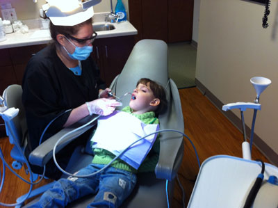
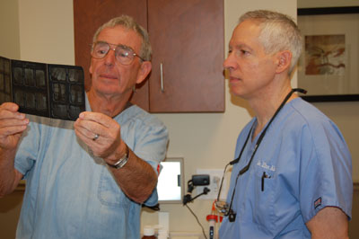

Cleaning and Prevention
Dental cleanings differ from your at-home dental routine of brushing and flossing. During your dental cleaning our dental hygienists include
- Removal of plaque to prevent gum inflammation and periodontal disease
- Removal of calculus (tartar) formed from plaque to prevent gingivitis
- Teeth polishing to remove stains and plaque
It is important that your teeth are regularly cleaned. Effective removal of plaque and calculus can only be done in a dentist office with the use of ultrasonic tools and specialized instruments. All regular check up appointments will include the following:
- Dental examination of diagnostic X-rays (radiographs): Essential for detection of decay, tumors, cysts, and bone loss. X-rays also help determine tooth and root positions.
- Oral cancer screening: Examination of the face, neck, lips, tongue, throat, tissues, and gums for any signs of oral cancer.
- Gum disease evaluation: Examination of the gums and bone around the teeth for any signs of periodontal disease.
- Examination of for tooth decay
- Examination of existing restorations: Examination of current fillings, crowns, bridges, etc.
Schedule a dental appointment with us soon so you can receive a thorough dental exam and maintain your oral health!
Adult Orthodontics
Adults who wish to enhance their appearance may opt for orthodontic therapy. Patients who require only minor tooth movement may qualify for this treatment which uses clear, removable, trays are used to move teeth.
Other Dental Services
Implants: A dental implant is an artificial tooth that replaces a tooth that has been taken out. Implants are natural-looking, can provide support for dentures, and do not affect the teeth bordering them. They are as stable as your real teeth and protect you from the loss of jawbone, which occurs when you lose teeth.
Crowns and Bridges: A dental crown is a tooth-shaped "cap" that is placed over a tooth to cover the tooth to restore its shape and size, strength, and/or to improve its appearance.
The crowns, when cemented into place, fully encase the entire visible portion of a tooth that lies at and above the gum line.
Dental bridges literally bridge the gap created by one or more missing teeth. A bridge is made up of two crowns for the teeth on either side of the gap -- these two anchoring teeth are called abutment teeth -- and a false tooth/teeth in between. These false teeth are called pontics and can be made from gold, alloys, porcelain, or a combination of these materials. Dental bridges are supported by natural teeth or implants.
Dentures and partials: A removable replacement of artificial teeth for missing natural teeth and surrounding tissues. Two types of dentures are available -- complete and partial. Complete dentures are used when all the teeth are missing, while partial dentures are used when some natural teeth remain
Night Guard: A removable acrylic appliance that fits over the upper and lower teeth used to prevent wear and temporomandibular damage caused by grinding or gnashing of the teeth during sleep.
Sealants: A thin, clear or white resin substance that is applied to the biting surfaces of teeth to prevent decay.
Composite resin filling: Tooth-colored restorative material composed of plastic with small glass or ceramic particles; usually "cured" or hardened with filtered light or chemical catalyst. An alternative to silver amalgam fillings.